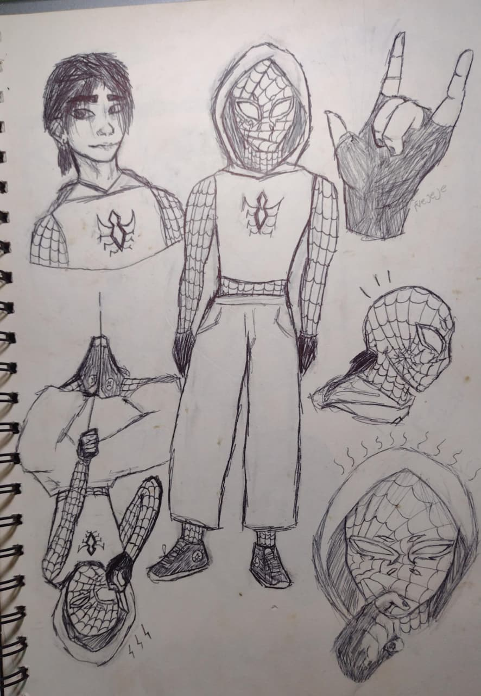
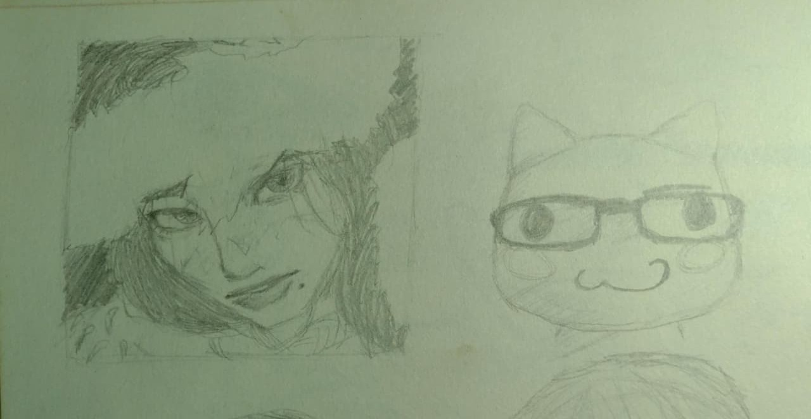
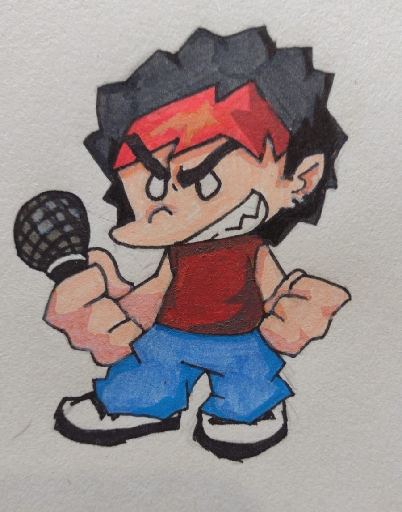
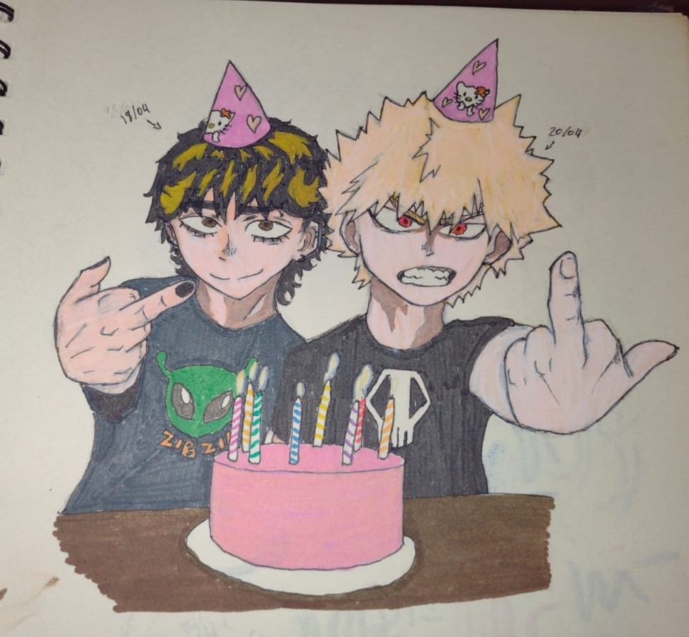
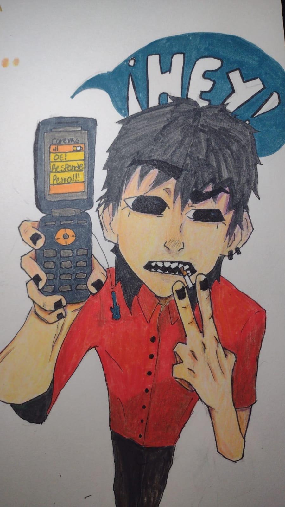
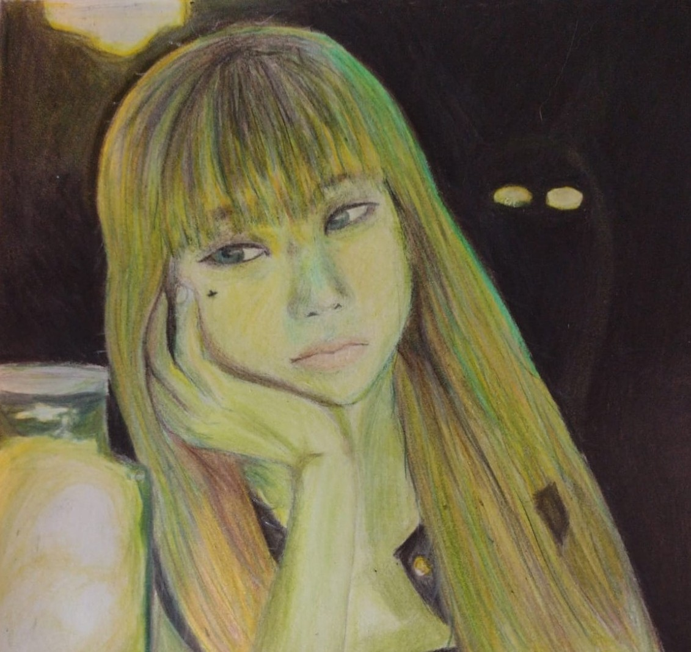
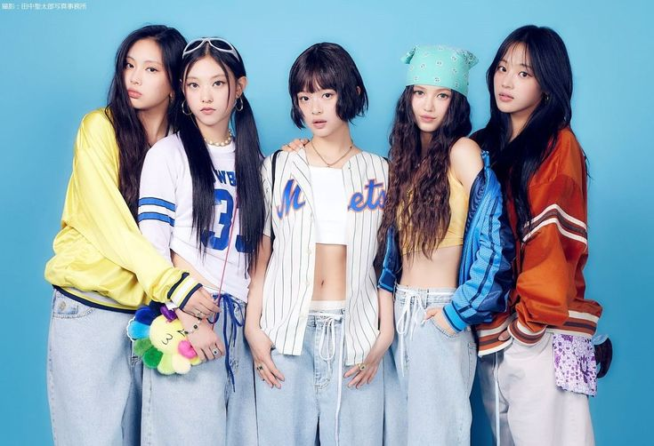
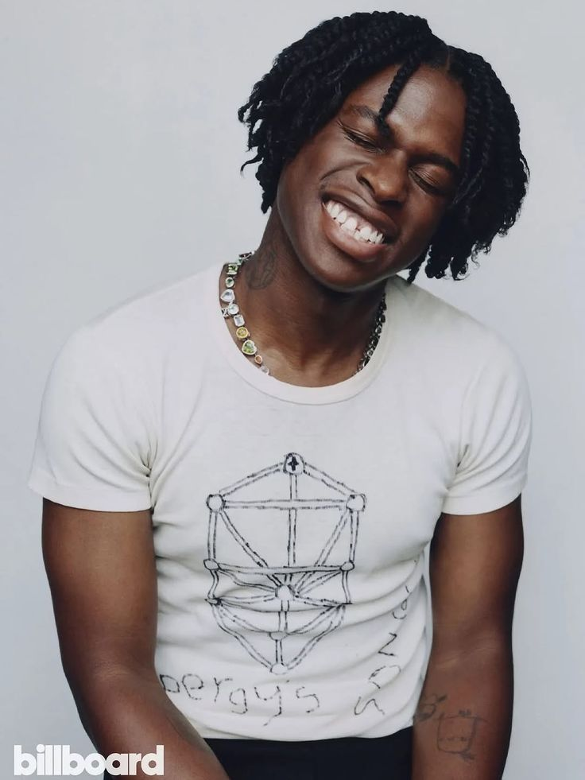
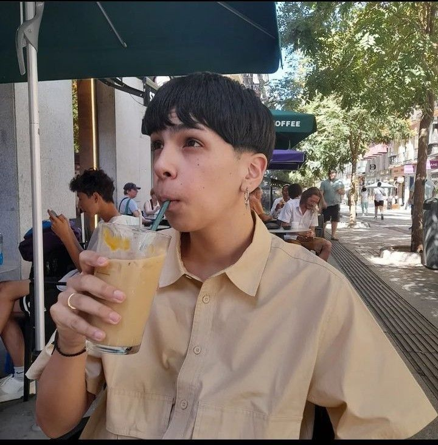

Soy A.T, artista en proceso.
Esta página es mi espacio para mostrar lo que creo: dibujos, textos, ideas y proyectos.
Me interesa el arte, la música y la escritura como formas de entenderme y entender el mundo.
Tipo
descripción
Frecuencia
Dibujos
Ilustraciones y bocetos
Semanal
Fotos
Fotografías estéticas
Mensual
Música
Audios y playlist
Ocasional
Galería/dibujos:
Me gusta representarme en aliens
Suelo dibujarme a mi mismo
¿Les gusta Gorillaz?

¿O les gusta Spider-Man?

A veces cuando me aburro dibujo cosas random de Pinterest

¿Cuál es vuestro videojuego favorito? Suelo hacer personajes de mis juegos o animes favoritos

El rubio no me cae tan bien, pero supongo que me visualizo un poco en él (además cumplimos años cerquita)

Tengo una amiga que siempre me motiva a hacer trends de dibujos, de hecho tenemos un canal en Whatsapp donde subimos nuestros dibujos

Creo que ha sido uno de mis mejores dibujos de personas, le tengo bastante cariño a esa chica
Es mi amorcito, creo que es la primera vez que la plasmo en algo, también la primera vez que pinto en lienzo
Galería/fotografías:
Hola!
Suelo tomar fotos raras, esto es lo que veía al despertar.
Cuando vuelvo a casa o salgo de ella, siempre me quedo a mirar esa casita.
El cielo es bastante vasto, siempre he tenido una fascinación por las nubes.
Me gustan los crepúsculos de aquí.
Esta calle la solía habitar todos los días en mi anterior escuela, hay demasiados recuerdos, tanto malos como buenos.
Ojalá algún dúa alguien me mirara como mi mamá mira a mi papá
Este fué el último día donde compartí con los de mi antigua escuela.
Y ella es el ser más precioso que tengo conmigo, ha estado a mi lado desde que yo tenía 6 años.
¿Qué es “A.T”? Sin filtros (opcional)
Más que un concepto, soy yo. Me presento, soy A.T, pero mis amigos me dicen Tony (y de otras formas, pero realmente solo me gusta ‘Tony’). Esta pagina la creo con el fin de motivarme a seguir creando, y porque mis dedos no solo sirven para el arte, aparentemente también para programar cosas básicas.
Es complicado llegar a lugares nuevos, hasta cuando sé que en algunos lugares será la última vez en mi vida que estaré en ellos. “¿Y por qué, A.T? ¿Eres antisocial o qué?” y no, de hecho, soy extrovertido (equilibradamente, aunque tengo mis días, o meses, donde me distancio y mi grupo social se vuelve mi habitación, mi gata y yo), pero lo digo porque para el mundo, dentro de los moldes que ha creado nuestro maravilloso sistema (¡claro que es sarcasmo! Ojalá quemen a los opresores) yo no tengo lugar, yo fui un circulo que un día se vio al espejo y se dio cuenta que tenía esquinas, pero al lado de los cuadrados no me veía como uno. Señoras y señores, niños y niñas, animales y extraterrestres, demonios y ángeles, en el sistema que nos toca vivir, hay grupos que son escupidos por… ser diferentes al sistema, o al menos a lo que este replica como “bueno o malo”. Bueno, sin muchas vueltas, me refiero a que soy un chico trans, por eso me parece tan complicado salir al mundo, me aterra un poco, me aterra que la gente se le corra la caspa y yo intente explicarlo y la respuesta no sea un entendimiento. Pero bueno, dejando de un lado la estupidez irracional humana y mi piromanía, exploremos el lado bueno de esto (al final estoy vivo de puro desparche, ¡hasta cuando era feto casi me extirpan pensando que era un tumor!... información irrelevante, pero graciosa).
Hablando más de qué hago (porque no solo pienso quejarme del mundo, también promocionarme un poquito, pero a mi manera, cero economías en este trayecto). Me gusta pintar y dibujar, aunque a veces la procrastinación hace parecer mis dibujos hechos por un niño pequeño, pero se me da bien y puedo pasar horas sentado haciendo una obra y no me canso. También me gusta mucho la música, y aunque no es mi fuerte, me gusta como hobby tocar la guitarra, sobre todo la guitarra eléctrica que suena como grrraaang grrraaang y waaa-waaa-waaa, y también me gusta el piano, aunque hace años no toco uno ya que lo dejé por unos problemitas de autoaceptación. También me gusta escribir (espero que no se note por todas las cosas innecesarias que escribo, jeje), me gusta escribir especialmente poemas o historias medio filosóficas y medio fantásticas, aunque no las escribo como tal, más bien me invento unos personajes, todo el lore en mi cabeza y escribo mapas o explicaciones ante ese mundo (porque escribir una novela aún me parece pesado, no he llegado a ese nivel, pero lo haré), y también me gusta montar la patineta, aunque apenas estoy aprendiendo y ya me he golpeado un par de veces, pero me falta caerme más, creo que entraré a algún club de skate para que me enseñen.
Finalmente les contaré que hay en especial aquí; mi vida, mi proceso. “¿a quién le importa, bro?” no sé, a tú mamá, lo único que me importa es expresarme, aunque sea con una pared (ignoren que me gusta pelear solo).
Gustos e Influencias
Ya mencioné que me gusta mucho escuchar música, y de hecho escucho varios géneros, pero mencionaré mis favoritos:
Beabadoobee / Rock alternativo
Beatriz es una chica filipina-británica, es joven y su música es suave, usa riffs y acordes sencillos, he aprendido fácilmente guitarra practicando algunas de sus canciones. Me gusta sobre todo sus letras nostálgicas, en busca de identidad y románticamente melancólicas. Mi canción favorita de ella es “I Wish I Was Stephen Malkmus”.
PinkPantheress / Pop alternativo
Victoria Beverley es una chica británica de raíces kenianas, tiene una música algo experimental, nostálgica, sus beats vienen de la cultura inglesa, combinando bedroom pop y drum and bass. Mi canción favorita de ella es “Take Me Home”.
NewJeans / K-pop
Realmente desde hace poco me ha dejado de gustar el K-pop por todo el control sistemático y el daño que les hacen pasar a los Idols para entretener y vender. De hecho, NewJeans es el único grupo que me ha gustado desde sus inicios y le guardo aprecio, a pesar de que tuvieron problemas con su empresa y estuvieron a punto de renunciar, pero hubo perjuicios por parte y parte. Aún así, su música es algo retro, nostálgica, romántica juvenil, y una de las chicas del grupo me gusta bastante, creo que nunca había tenido un celebrity crush tan fuerte. Mi álbum favorito de ellas es “OMG” (ya que tiene mis dos canciones favoritas: “OMG” y “Ditto”).

Laufey / Jazz – Bossanova
Laufey es una mujer china-islandesa, su música es suave, realmente melancólica y nostálgica, me gustan sus letras tristes pero reales, describe humanamente los sentimientos que ni siquiera podríamos nombrar. Mi canción favorita es “Dreamer”
Daniel Caesar / Soul – R&B
Ashton es un hombre canadiense y de ascendencia jamaicana, sus canciones son muy suaves y relajantes, generalmente hablan de amor, amor no correspondido y religión. No soy alguien religioso, pero su música me transmite bastante armonía. Mi canción favorita de él es “Get you” (con Kali Uchis).

Tyler, The Creator / Rap alternativo – Hip Hop.
Tyler es un hombre estadounidense de ascendencia igbo, su música suele ser algo controversial, habla sobre identidad, amor, soledad, introspección y siempre viene acompañado de criticas sociales. Mi canción favorita de él es “She” (con Frank Ocean).
Milo J / Trap - R&B - Folclore argentino
Camilo joaquín es un cantante argentino, su música abordan temas de identidad, amor y sus experiencias personales en la vida. Mi canción favorita de él es "Recordé".

Aquí mi playlist por si les interesa conocer más de estos y otros artistas:
PLAYLIST FOR FREEFRIKI!
Pueden explorar mis otras playlist si desean.